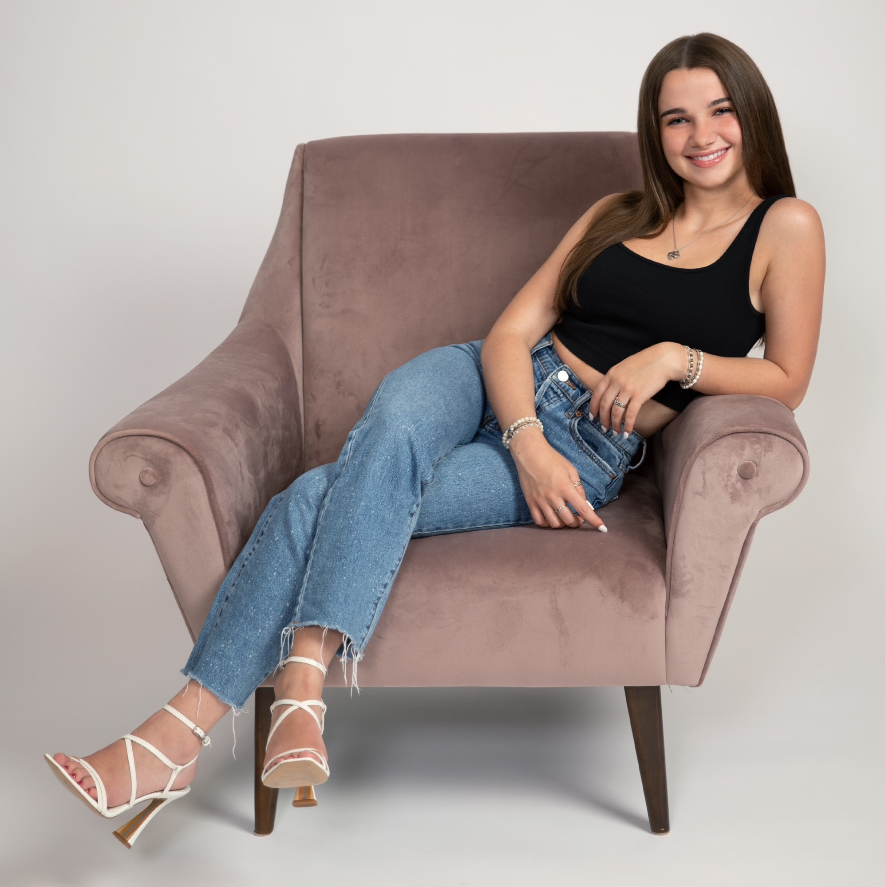
I'm an architecture student at the University of Oregon, with a minor in art.
In 2022 I took a summer design course at the University of Massachusetts Amherst, where I made the three projects below. Below them is a selection of my drawings and paintings.
Architecture3 projects
- 01 / 2022
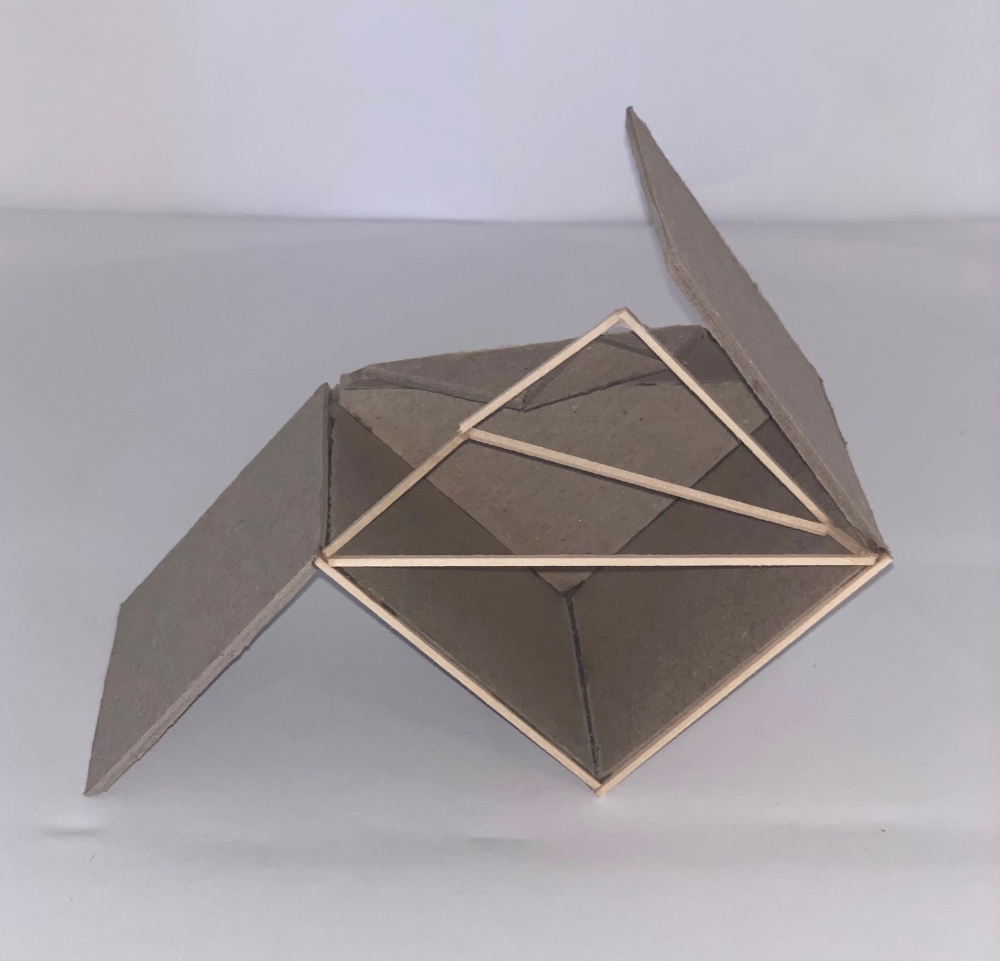
A Box That Is Not A BoxProject 01: what makes a box a box, explored through six models and a final model. - 02 / 2022
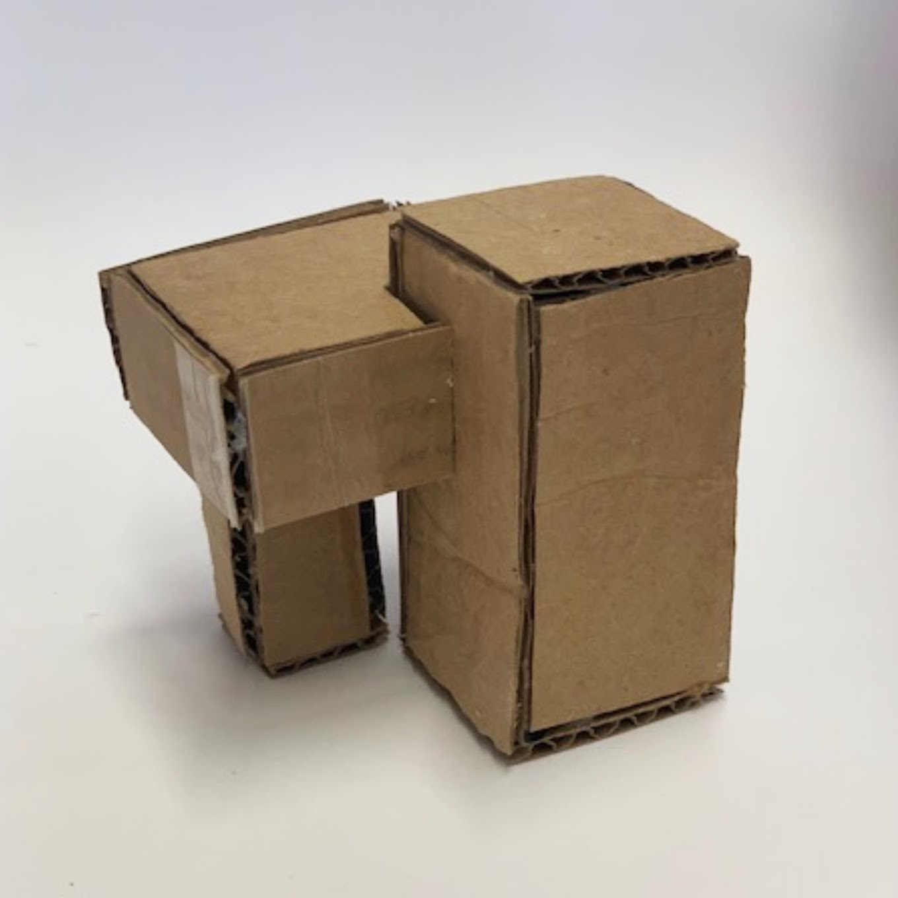
Rectilinear ShapesProject 02: forms built by combining planes, nine models and a final model. - 03 / 2022
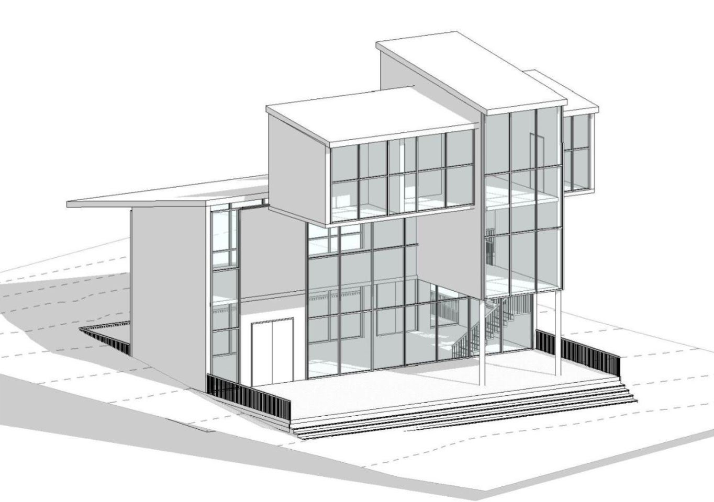
Shelter + DwellingProject 03: a building for students, set at an angle on its site to take in the view of the pond.
Art8 pieces
- 04
 Life and DeathMicron Pens · 14 x 11 inches
Life and DeathMicron Pens · 14 x 11 inches - 05
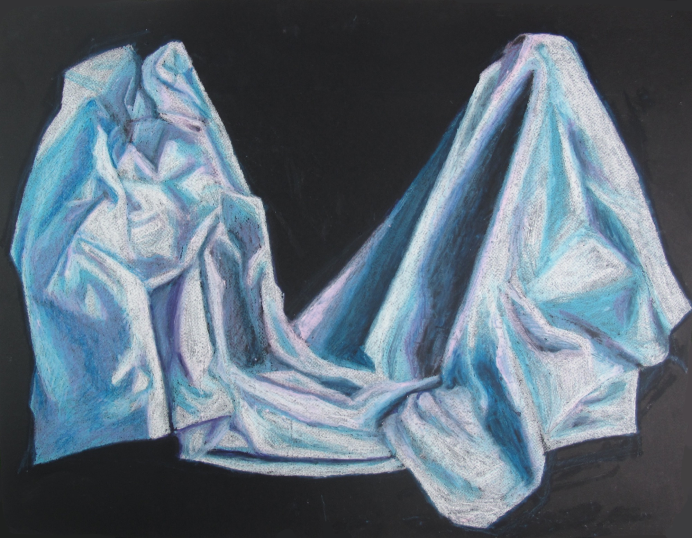
Color and Light in Person Visual StudyOil Pastel · 25.5 x 20 inches - 06
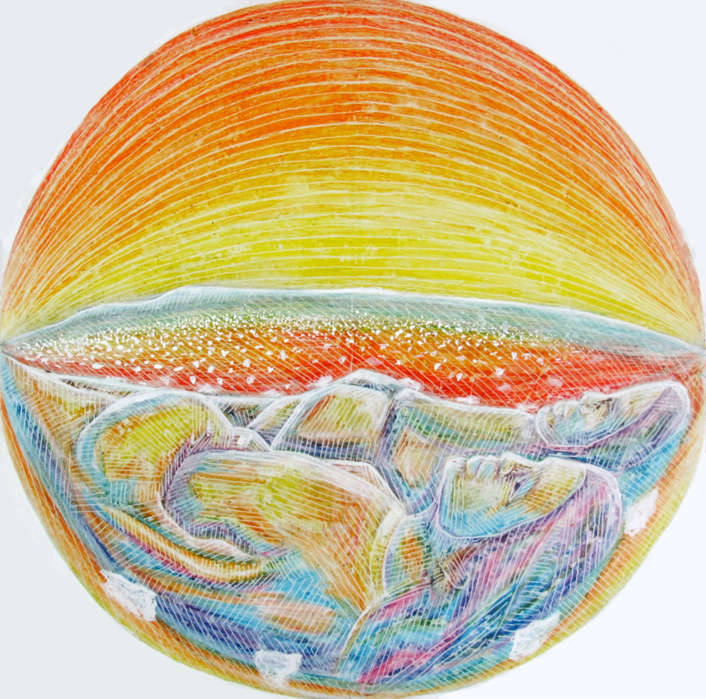
SpacePastel, White Acrylic Paint - 07
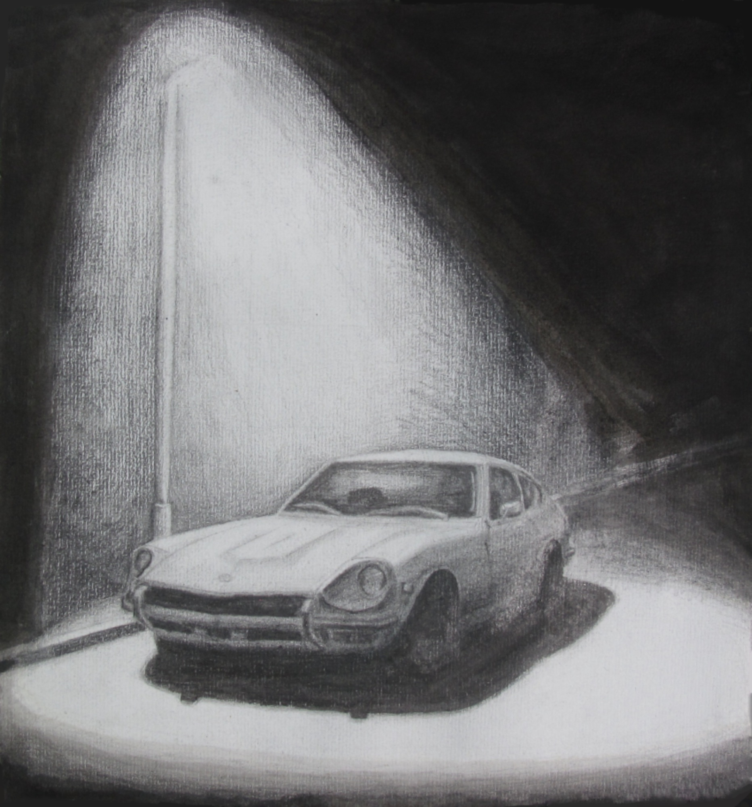
DatsunIndia Ink, Graphite - 08
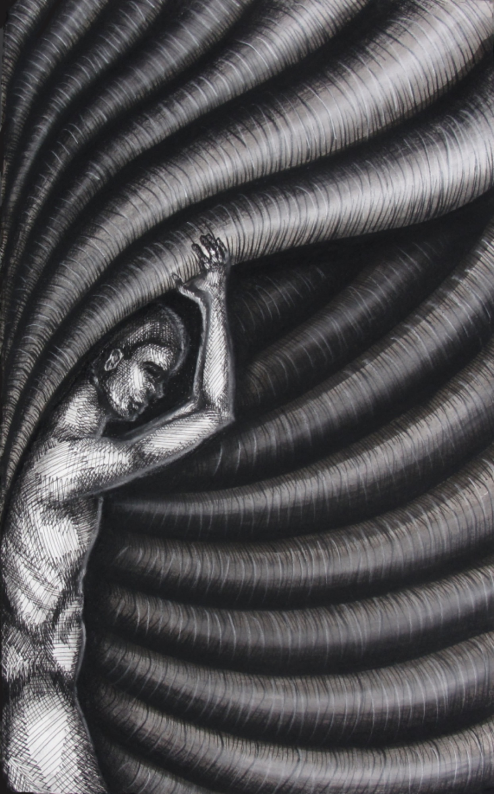
SwallowedIndia Ink, Charcoal, Pastel, Micron Pen - 09
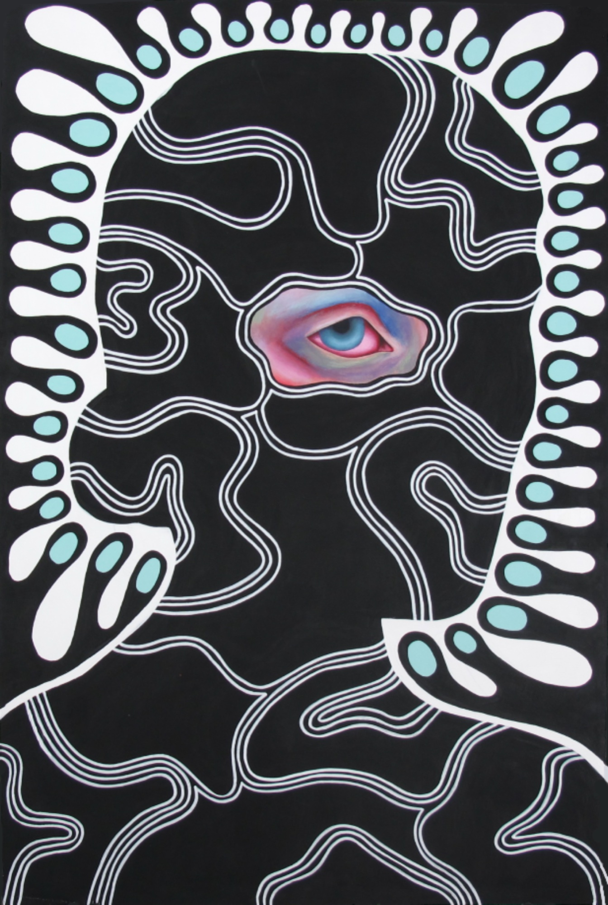
I See Through YouAcrylic Paint, Paint Pens · 20 x 30 inches - 10
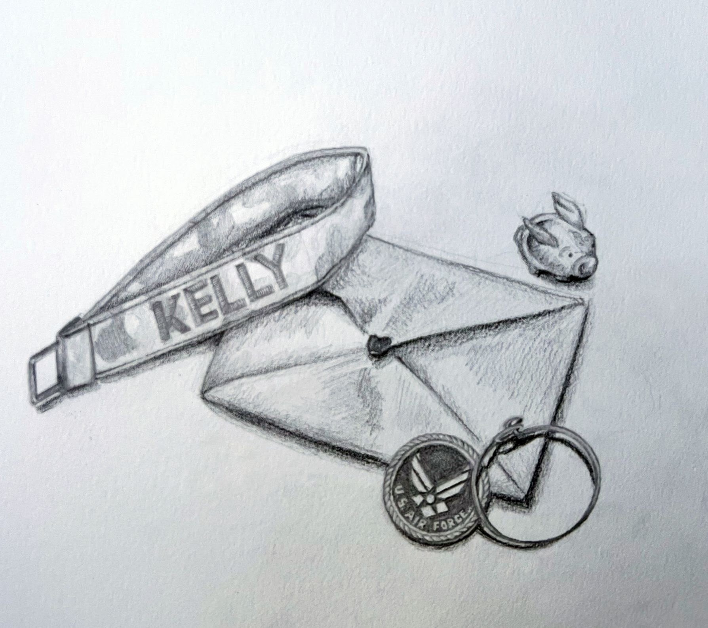
SentimentGraphite · 10 x 8.5 inches - 11
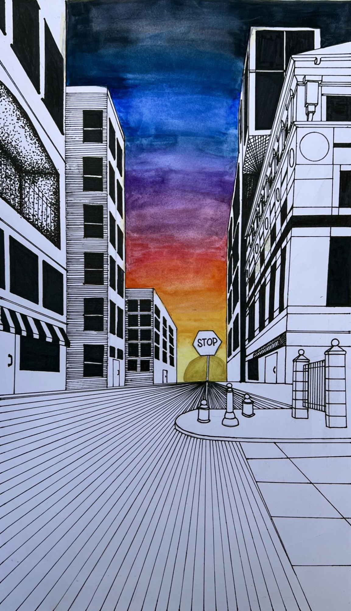
MiamiMicron Pen, Watercolor · 11 x 19.5 inches